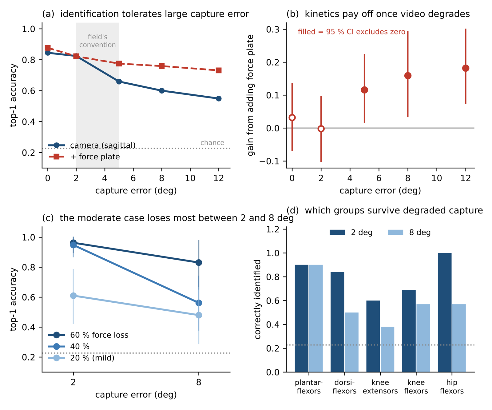

Under review · Journal of Biomechanics
The field's rule for “good enough” motion capture scores the measurement. Nobody had scored the decision.
Mu-Hua Wang · Hui-Ting Shih
Institute of Biomedical Engineering, National Yang Ming Chiao Tung University
After a neurological injury, weakness is group-specific, and which group is weak determines which strengthening programme is indicated. Each clip shows healthy gait beside the weakened condition on a shared clock. Muscle activation is colour-coded on the skeleton, the weakened group is drawn in red, and the green arrows are the ground reaction force. Watch them before reading a single number: the five patterns are obviously different.
Plantarflexors · 60 % force loss
Dorsiflexors · 60 %
Knee extensors · 60 %
Knee flexors · 40 %
Hip flexors · 60 %
Markerless motion capture is making it possible to measure gait outside a laboratory — at a cost in accuracy. The trace below is the real simulated ankle trajectory from the 60 % plantarflexor condition, 200 samples over the analysis window. Drag the slider to add zero-mean Gaussian error at the σ you choose, exactly as the study does, and watch what the classifier is left with.
Black: the true trajectory. Red: what a camera at this error level hands the classifier. The noise is seeded, so the trace is stable while you drag.
Interpolated between the five measured levels: 0.845, 0.824, 0.659, 0.600 and 0.549 at 0°, 2°, 5°, 8° and 12°. Majority-class baseline is 0.227. Each decision pools a condition's four independent noise realisations.
The gap you just opened is the whole paper. You can still see which walk is which. The classifier increasingly cannot. Accuracy nevertheless stays above twice the majority-class baseline at every level tested.
Weakness is imposed one muscle group at a time in forward-dynamic simulation, where the answer is known by construction. Then joint-angle error is added in controlled amounts. The interesting result is that the answer is not one number. Tolerance depends on how severe the deficit is — and the case measurement quality matters most for is the moderate one, not the mild one.
| Capture error | Top-1 accuracy |
|---|---|
| 0° | 0.845 |
| 2° | 0.824 |
| 5° | 0.659 |
| 8° | 0.600 |
| 12° | 0.549 |
Camera tier, pooling four captures per decision. Majority-class baseline 0.227 top-1, 0.667 top-3. Scoring one capture at a time — what a clinic actually gets — gives 0.845, 0.767, 0.643, 0.553 and 0.504. Either curve supports the same conclusions.
| Force loss | at 2° | at 8° | loss |
|---|---|---|---|
| 60 % | 0.963 | 0.831 | −0.132 |
| 40 % | 0.948 | 0.562 | −0.385 |
| 20 % | 0.61–0.80 | 0.480 | −0.130 |
Top-3 at 2°: 1.000, 1.000, 0.970. At 8°: 1.000, 0.958, 0.855. The 20 % figure is the least stable number in the study — 0.799, 0.650 and 0.610 across three independent rebuilds of the dataset — so it is quoted here as a range. The moderate case shows about three times the loss of either extreme; with five model variants that difference is not statistically separable.
| Group | 2° | 8° |
|---|---|---|
| Plantarflexors | 0.90 | 0.90 |
| Dorsiflexors | 0.84 | 0.50 |
| Knee extensors | 0.60 | 0.38 |
| Knee flexors | 0.69 | 0.57 |
| Hip flexors | 1.00 | 0.57 |
The mistakes are not random. At 2° the dominant substitutions are knee extensors called plantarflexors (22 %), knee flexors called hip flexors (18 %) and dorsiflexors called hip flexors (13 %) — pairs that share a role in stance support or limb advancement. The same pairs dominate at 8°.
| Error | Gain | 95 % CI | Excl. 0 |
|---|---|---|---|
| 0° | +0.032 | [−0.068, +0.134] | no |
| 2° | −0.002 | [−0.101, +0.096] | no |
| 5° | +0.116 | [+0.018, +0.223] | yes |
| 8° | +0.159 | [+0.035, +0.293] | yes |
| 12° | +0.182 | [+0.075, +0.300] | yes |
The camera tier contains six timing features that in this model derive from vertical ground reaction force — which a camera alone would not supply. Priced against the 27 purely kinematic features a camera really does deliver (scoring 0.824, 0.875, 0.742, 0.623, 0.536), the plate adds +0.032, −0.053, +0.033, +0.136 and +0.182. The 5° gain falls from +0.116 to +0.033. The honest crossover is 8°, not 5°.

Figure 1 of the paper, panels (a) to (d).
Five muscle groups × three severities (20, 40, 60 % reduction in maximum isometric muscle force) × five model variants. Nine cells failed quality control, and the missing ones sit at the higher severities.
Re-optimised by CMA-ES after each imposed weakness, so the walker adapts rather than merely deviating.
The off-diagonal confusion pattern at 2° predicts the pattern at 5°, 8° and 12°, each above a permutation null. A simulator artefact would be destroyed by added error rather than degraded.
Extremely randomised trees, no hyperparameter tuning. A “model variant” is a whole-body rescaling by a single strength factor (0.85, 0.95, 1.00, 1.05, 1.10) — it is not a separate person.
Two of the paper's claims were downgraded during review after the authors' own stricter tests failed to support them. These limits are load-bearing, not boilerplate.
| Source | What it reports |
|---|---|
| McGinley et al. 2009 | The convention: 2° or less acceptable, 2–5° needs consideration, above 5° large enough to mislead. It scores measurement quality, and had never been tested against a decision. |
| Uhlrich et al. 2023 | OpenCap smartphone capture: 4.5° mean absolute error, pooled over eighteen degrees of freedom and four activities, ten healthy adults. |
| Horsak et al. 2023 | Smartphone markerless, normal gait plus imitated crouch, circumduction and equinus, 21 healthy volunteers: 5.8° RMSE, 11.3° mean peak error, lowest for normal gait. |
| Slijepcevic et al. 2023 | Classifying cerebral-palsy gait patterns: kinematics far outperformed ground reaction force, 93.4 % against 47.2 %, and adding force on top of kinematics gave no advantage. |
Markerless capture today sits at roughly 4.5–5.8° — on the wrong side of the convention, and, by this study, on the wrong side of the moderate deficit too.